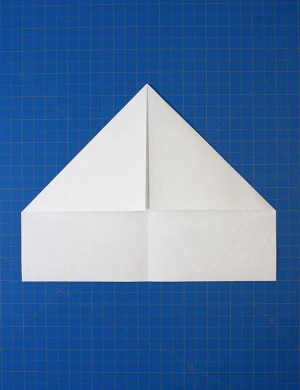
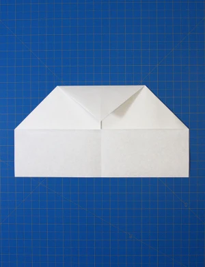
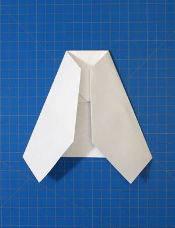
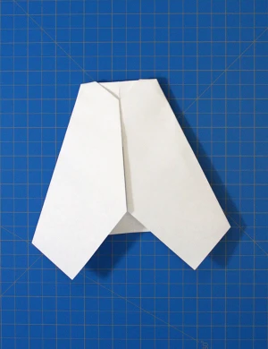
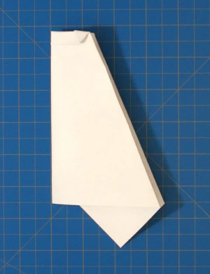
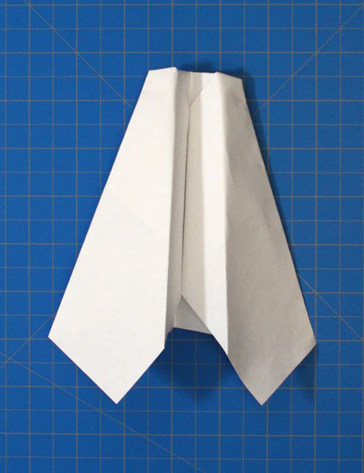

1Step 1
Crease the sheet down the middle.
Hangar figures for this design — distance in metres, hang time in seconds, and rank among scored planes — before you fold.
| Metric | Measured result | Hangar rank |
|---|---|---|
| Distance | 9–12 m (30–39 ft) | #30 of 37 |
| Hang time | 5–6 s | #17 of 36 |
Test conditions (same for every design we score): 70–80 gsm Letter or A4 printer paper; standing release at about 1.6 m shoulder height; calm indoor air (no wind); each thrower gets 10 attempts and we keep their best throw. Ranks compare only designs that cleared the scoring threshold under this protocol.
Crease the sheet down the middle.

Open the sheet, then bring the top corners to the midline.

Fold the tip down to the edge of the previous fold.

Fold the upper flanks in onto the midline.

Fold the top back about 1/2 inch (13 mm) away from you.

Bring the halves together toward yourself.

Fold both flaps out to create the wings. The body will be about half an inch (13mm) tall as shown in the guide.
Our measured hangar result is 9–12 metres (about 30–39 feet), ranking #30 of 37 distance-rated designs. See the measured results table above the folding steps for metres, hangar rank, and the fixed protocol (70–80 gsm paper, ~1.6 m shoulder-height release, calm air, best of 10 throws per person).
Our measured hang time is 5–6 seconds, #17 of 36 for time aloft. See the measured results table above the folding steps for metres, hangar rank, and the fixed protocol (70–80 gsm paper, ~1.6 m shoulder-height release, calm air, best of 10 throws per person).
It is best for long floating glides. Folding skill is intermediate. Use Letter & A4, 7 steps, hands only.
Launch gently at a slight upward angle, ideally from a high spot, and let it settle into a glide instead of throwing it hard.